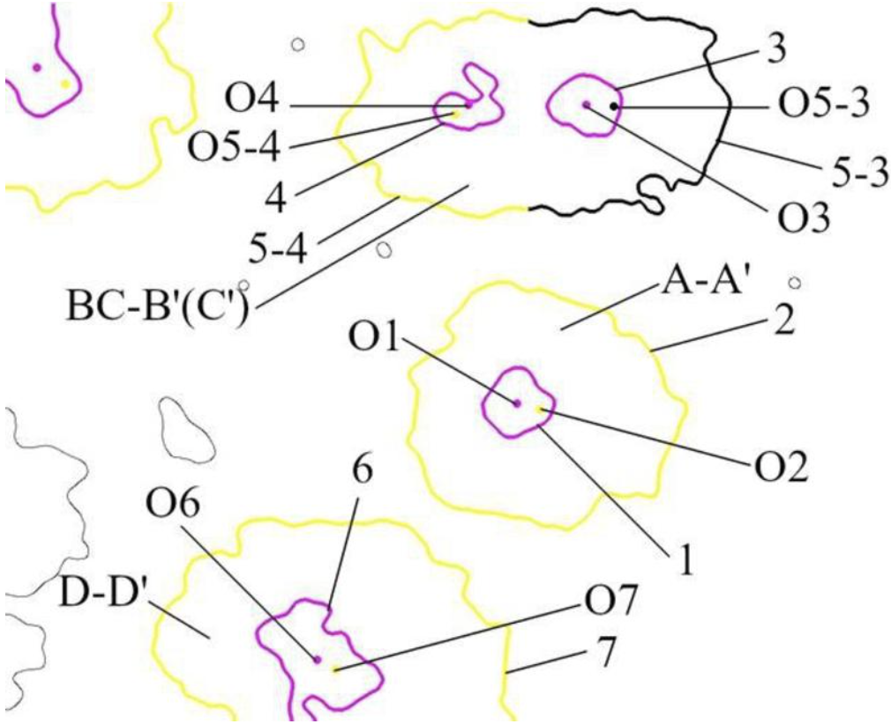

I am a Ph.D. student at Tsinghua University supervised by Prof. Guoliang Huang. Prior to my Ph.D. program, I worked on AI for science supervised by Assoc. Prof. Xueying Zhang and intelligent robots supervised by Prof. Tianmiao Wang at Beihang University.
My research interests include Medical Informatics, Artificial Intelligence, and Robotics. I am eagerly in applying Robust AI algorithms to Biomedical Systems.
Contact:
E-mail: wangshihong@buaa.edu.cn
Office: Medical Science Building, B211
Profiles:
{kind=link}
{kind=link}
{kind=link}
{kind=link}
{kind=link}
{kind=link}
Publications
Conferences
|
E-LMC: Extended Linear Model of Coregionalization for Spatial Field Prediction
Shihong Wang,
Xueying Zhang,
Yichen Meng,
Wei W. Xing
|
{kind=link}
Journals
{kind=link}

|
Spintronic Intelligent Devices
Wenlong Cai*,
Yan Huang*,
Xueying Zhang*,
Shihong Wang,
Yuanhao Pan,
Jialiang Yin,
Kewen Shi,
Weisheng Zhao
SCIENCE CHINA Physics, Mechanics & Astronomy, 2022
|
Patents
|  |
Automatic Method for Measuring the Speed of Magnetic Domain Wall
Yichen Meng,
Xueying Zhang,
Wei W. Xing,
Shihong Wang,
Jiazheng Niu,
Lin Wang
China Patent, CN202211271481.0, 2022
|
{kind=link}
|
Efficient Mechanism Design of the Closed-chain Single-degree-of-freedom Five-bar-leg
Zexu Han,
Xu Pei,
Jinjian Duan,
Shihong Wang
China Patent, ZL201911035282.8, 2019
|
{kind=link}
{kind=link}